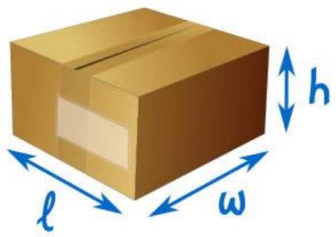
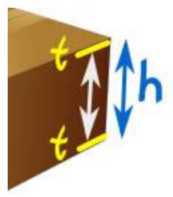
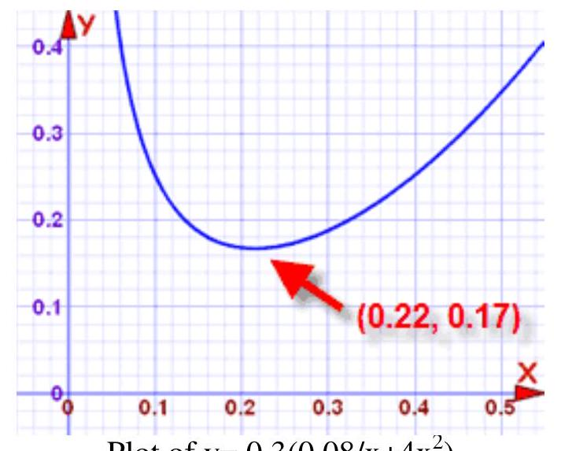

CHAPTER 11: INTRODUCTION TO MODELING
Introduction to Mathematical modeling
A mathematical model is a description of a system using mathematical concepts and language. The process of developing a mathematical model is termed mathematical modeling. Mathematical models are used in the natural sciences (such as physics, biology, earth science, meteorology) and engineering disciplines (such as computer science, artificial intelligence), as well as in the social sciences (such as economics, psychology, sociology, political science).
A model may help to explain a system and to study the effects of different components, and to make predictions about behavior.
Hypothesis, Model, Theory & Law
In common usage, the words hypothesis, model, theory, and law have different interpretations and are at times used without precision, but in science they have very exact meanings.
Hypothesis
It is a limited statement regarding the cause and effect in a specific situation, which can be tested by experimentation and observation or by statistical analysis of the probabilities from the data obtained. The outcome of the test hypothesis should be currently unknown, so that the results can provide useful data regarding the validity of the hypothesis.
Sometimes a hypothesis is developed that must wait for new knowledge or technology to be testable. The concept of atoms was proposed by the ancient Greeks, who had no means of testing it. Centuries later, when more knowledge became available, the hypothesis gained support and was eventually accepted by the scientific community, though it has had to be amended many times over the year. Atoms are not indivisible, as the Greeks supposed.
Model
A model is used for situations when it is known that the hypothesis has a limitation on its validity.
Several classes of models
Three classes appear :
- Models which come from laws of physics: this is the case for gravitation laws, Maxwell equations (waves), Navier-Stokes equations (fluid dynamics), and so on;
- Model which come from empirical laws, such as air resistance for a movement: this laws are of empirical nature;
- Models which use statistical laws, for instance that fit a line between several points and assume the response to be linear.
Theory & Law
A scientific theory or law represents a hypothesis (or group of related hypotheses) which has been confirmed through repeated testing, almost always conducted over a span of many years.
Downloaded by Patrick Ngobiro (pngobiro@gmail.com)
Generally, a theory is an explanation for a set of related phenomena, like the theory of evolution or the big bang theory.
The word "law" is often invoked in reference to a specific mathematical equation that relates the different elements within a theory. Pascal's Law refers an equation that describes differences in pressure based on height. In the overall theory of universal gravitation developed by Sir Isaac Newton, the key equation that describes the gravitational attraction between two objects is called the law of gravity.
These days, physicists rarely apply the word "law" to their ideas. In part, this is because so many of the previous "laws of nature" were found to be not so much laws as guidelines, that work well within certain parameters but not within others.
General rules of mathematical modeling
- Look at how others model similar situations; adapt their models to the present situation.
- Collect/ask for background information needed to understand the problem.
- Start with simple models; add details as they become known and useful or necessary.
- Find all relevant quantities and make them precise.
- Find all relevant relationships between quantities ([differential] equations, inequalities, case distinctions).
- Locate/collect/select the data needed to specify these relationships.
- Find all restrictions that the quantities must obey (sign, limits, forbidden overlaps, etc.). Which restrictions are hard, which soft? How soft?
- Try to incorporate qualitative constraints that rule out otherwise feasible results (usually from inadequate previous versions).
- Find all goals (including conflicting ones)
- Play the devil's advocate to find out and formulate the weak spots of your model.
- Sort available information by the degree of impact expected/hoped for.
- Create a hierarchy of models: from coarse, highly simplifying models to models with all known details. Are there useful toy models with simpler data? Are there limiting cases where the model simplifies? Are there interesting extreme cases that help discover difficulties?
- First solve the coarser models (cheap but inaccurate) to get good starting points for the finer models (expensive to solve but realistic)
- Try to have a simple working model (with report) after $1 / 3$ of the total time planned for the task. Use the remaining time for improving or expanding the model based on your experience, for making the programs more versatile and speeding them up, for polishing documentation, etc.
- Good communication is essential for good applied work.
- The responsibility for understanding, for asking the questions that lead to it, for recognizing misunderstanding (mismatch between answers expected and answers received), and for overcoming them lies with the mathematician. You cannot usually assume your customer to understand your scientific jargon.
- Be not discouraged. Failures inform you about important missing details in your understanding of the problem (or the customer/boss) - utilize this information!
- There are rarely perfect solutions. Modeling is the art of finding a satisfying compromise. Start with the highest standards, and lower them as the deadline approaches. If you have results early, raise your standards again.
- Finish your work in time.
Construct generalized models
Mathematics can be used to "model", or represent, how the real world works.
Example: how much space is inside this cardboard box?
We know three measurements:
- $\mathbf{I}$ (length),
- w (width), and
- $\mathbf{h}$ (height),
and the formula for the volume of a cuboid
is:
So we have a (very simple) mathematical model of the space in that box.
Accurate?
The model is not the same as the real thing.
In our example we did not think about the thickness of the cardboard, or many other "real world" things.
But hopefully it is good enough to be useful.
If we are charged by the volume of the box we send, we can take a few measurements and know how much to pay.
It can also be useful when deciding which box to buy when we need to pack things.
So the model is useful!
But maybe we need more accuracy, we might need to send hundreds of boxes every day, and the thickness of the cardboard matters. So let's see if we can improve the model:
The cardboard is " t " thick, and all measurements are outside the box ... how much space is inside?
The inside measurements need to be reduced by the thickness of each side:
- The inside length is $\mathbf{1 - 2 t}$
- The inside width is $\mathbf{w - 2 t}$,
- The inside height is $\mathbf{h - 2 t}$
and now the formula is:
Now we have a better model. Still not perfect (did we consider wasted space because we could not pack things neatly, etc ...), but better.
So a model is not reality, but should be good enough to be useful.
Playing With The Model
Now we have a model, we can use it in different ways:
Example: Your company uses $200 \times 300 \times 400 \mathrm{~mm}$ size boxes, and the cardboard is 5 mm thick.
Someone suggests using 4 mm cardboard ... how much better is that?
Let us compare the two volumes:
- Current Volume $=(200-2 \times 5) \times(300-2 \times 5) \times(400-2 \times 5)=190 \times 290 \times 390 = 21,489,000 \mathrm{~mm}^{3}$
- New Volume $=(200-2 \times 4) \times(300-2 \times 4) \times(400-2 \times 4)=192 \times 292 \times 392 = 21,977,088 \mathrm{~mm}^{3}$
That is a change of:
$(21,977,088-21,489,000) / 21,489,000 \approx 0.0227 \approx 2.3\%$ more volume
So the model is useful. It lets us know we will get $\approx 2.3\%$ more space inside the box (for the same outside measurements).
But there are still "real world" things to think about, such as "will it be strong enough?"
Thinking Clearly
To set up a mathematical model we also need to think clearly about the facts!
Example: on our street there are twice as many dogs as cats. How do we write this as an equation?
- Let $\mathrm{D}=$ number of dogs
- Let $\mathrm{C}=$ number of cats
Now ... is that: $2 \mathrm{D}=\mathrm{C}$ or should it be: $\mathrm{D}=2 \mathrm{C}$
Think carefully now!
The correct answer is $\mathrm{D}=2 \mathrm{C}$
($\mathbf{2 D}=\mathbf{C}$ is a common mistake, as the question is written "twice ... dogs ... cats")
Here is another one:
Example: You are the supervisor of 8-hour shift workers. They recently had their break times reduced by 10 minutes but total production did not improve.
At first glance there is nothing to model, because there was no change in production.
But wait a minute ... they are working 10 minutes more, but producing the same amount, so production per hour must have dropped!
Let us assume they used to work 7 hours ( 420 minutes):
Old work time = 420 min (assuming 1 hour break)
New work time = 420 + 10 = 430 min
Let P = total production (constant)
Old rate = P / 420
New rate = P / 430
Ratio of New Rate / Old Rate = (P/430) / (P/420) = 420 / 430
Change in production per hour = $420 / 430 \approx \mathbf{0 . 9 7 6 7}$...
Which is a reduction of more than $\mathbf{2 . 3 \%}$
But even worse: the first few hours of the shift are not be affected by the shorter break time, so it could be a 4 or $5 \%$ reduction later in the shift.
You could recommend:
- looking at production rates for every hour of the shift
- trying different break times to see how they affect production
Steps into Model Building
A Bigger Example: Most Economical Size, OK, let us have a go at building and using a mathematical model to solve a real world question.
Your company is going to make its own boxes!
It has been decided the box should hold $\mathbf{0 . 0 2 \mathbf { m } ^ { \mathbf { 3 } }}$ ( 0.02 cubic meters which is equal to 20 liters) of nuts and bolts.
The box should have a square base, and double thickness top and bottom.
Cardboard costs $\mathbf{\$ 0 . 3 0}$ per square meter.
It is up to you to decide the most economical size.
Step One: Draw a sketch!
It helps to sketch out what we are trying to solve!
The base is square, so we will just use " w " for both lengths
The box has 4 sides, and double tops and bottoms.
The box shape could be cut out like this (but is probably more complicated):
Step Two: Make Formulas.
Ignoring thickness for this model:
And we are told that the volume should be $0.02 \mathrm{~m}^{3}$ :
Areas:
Area of the 4 Sides = $4 \times w \times h=4 w h$
Area of Double Tops and Bases = $2 \times (w \times w) + 2 \times (w \times w) = 4 w^{2}$
Total cardboard needed:
Step Three: Make a Single Formula For Cost
We want a single formula for cost:
And that is the cost when we know width and height.
That could be hard to work with ... a function with two variables.
But we can make it simpler! Because width and height are already related by the volume:
... which can be rearranged to ...
... and that can be put into the cost formula ...
And now the cost is related directly to width only.
With a little simplification we get:
Step Four: Plot it and find minimum cost
What to plot? Well, the formula only makes sense for widths greater than zero, and I also found that for widths above 0.5 the cost just gets bigger and bigger.
So here is a plot of that cost formula for widths between $\mathbf{0 . 0} \mathbf{~ m}$ and $\mathbf{0 . 5 5} \mathbf{~ m}$ :
Plot of $y=0.3\left(0.08 / x+4 x^{2}\right)$
$\mathbf{x}$ is width, and $\mathbf{y}$ is cost
Just by eye, I see the cost reaches a minimum at about (0.22, 0.17). In other words:
- when the width is about $\mathbf{0 . 2 2} \mathbf{~ m}$ (x-value),
- the minimum cost is about $\mathbf{\$ 0 . 1 7}$ per box ( y -value).
In fact, looking at the graph, the width could be anywhere between 0.20 and 0.24 without affecting the minimum cost very much.
Step Five: Recommendations
Using this mathematical model you can now recommend:
- Width = $0.22 \mathrm{~m}$
- Height = $0.02 / \mathrm{w}^{2}=0.02 / 0.22^{2} \approx 0.413 \mathrm{~m}$
- Cost = $\$ 0.30 \times\left(0.08 / \mathrm{w}+4 \mathrm{w}^{2}\right)=\$ 0.30 \times\left(0.08 / 0.22+4 \times 0.22^{2}\right) \approx \$ 0.167$
Or about 16.7 cents per box
But any width between 0.20 m and 0.24 m is fine.
You might also like to suggest improvements to this model:
- Include cost of glue/staples and assembly
- Include wastage when cutting box shape from cardboard.
- Is this box a good shape for packing, handling and storing?
- Any other ideas you may have!
Predicting the Future
Mathematical models can also be used to forecast future behavior.
Example: An ice cream company keeps track of how many ice creams get sold on different days.
By comparing this to the weather on each day they can make a mathematical model of sales versus weather.
They can then predict future sales based on the weather forecast, and decide how many ice creams they need to make ... ahead of time!
Computer Modeling
Mathematical models can get very complex, and so the mathematical rules are often written into computer programs, to make a computer model.
Examples include:
- Weather prediction
- Economic Models (predicting interest rates, unemployment, etc)
- Models of how large structures behave under stress (bridges, skyscrapers, etc)
- Many more ...
If you become an expert in any of those you will have a job for life!
Meaning of mathematical Model pseudo-code
Pseudo-code is an informal way of programming description that does not require any strict programming language syntax or underlying technology considerations. It is used for creating an outline or a rough draft of a program. Pseudo-code summarizes a program's flow, but excludes underlying details. System designers write pseudo-code to ensure that programmers understand a software project's requirements and align code accordingly. Pseudo-code is an informal high-level description of the operating principle of a computer program or other algorithm.
An algorithm is a procedure for solving a problem in terms of the steps to be executed and the order in which those steps are to be executed. An algorithm is merely the sequence of steps taken to solve a mathematical problem and may be Regarded as a pseudo-code